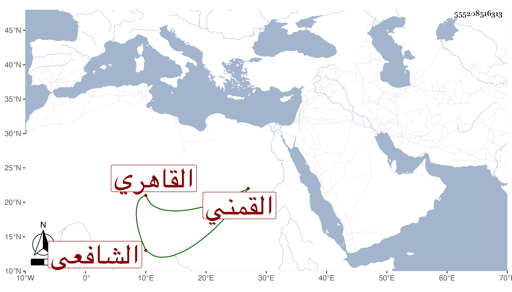

0902Sakhawi.DawLamic.ITO20230111-ara1.EIS1600.555208516313
Biography ID: 555208516313
460
عائشة ابنة أبي بكر بن عمر بن عرفات بن عوض أم الخير ابنة الزين القمني ثم القاهري الشافعي أخت المحب محمد وفاطمة . ولدت سنة أربع وتسعين وسبعمائة تقريبا فإنها أحضرت في جمادى الأول سنة ثمان وتسعين على الجمال الحلاوي أشياء بل أسمعت عليه بعد ذلك ، وأجاز لها أبو هريرة بن الذهبي وابن قوام وغيرهما من الشاميين والتاج بن موسى وأحمد بن محمد بن الخراط وآخرون من السكندريين وحدثت أخذت عنها أشياء وأملقت جدا بحيث أقامت في رباط أم الزيني بن مزهر مدة وكانت تقبل من الطلبة اليسير وربما ذهبت معهم إلى الحلاوية في الأبارين للإسماع . ماتت بعد ثقل سمعها قليلا في ليلة الخميس حادي عشر ربيع الثاني سنة ثمانين وصلى عليها من الغد .
